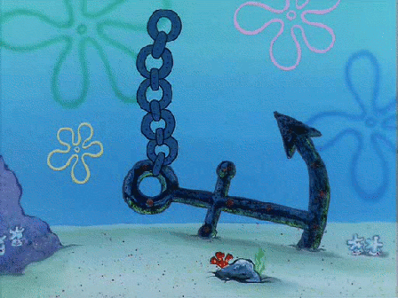

CABEÇALHO2 (<H>)
Esta é outra página sobre desenhos
Desenvolvida para satisfazer a pluralidade requerida
Pela Professora de ODAW da UDESC
FONTES DIFERENTES USANDO HTML4
FONTES DIFERENTES USANDO HTML5

LINK